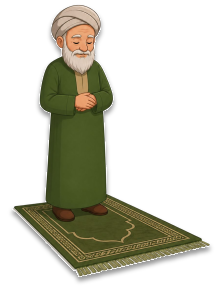
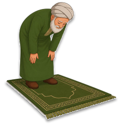
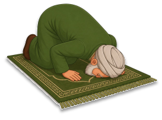
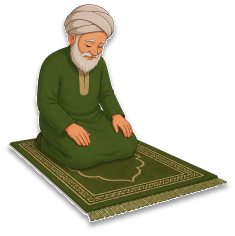
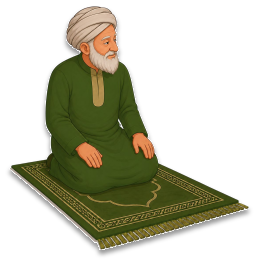
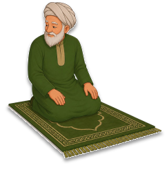

Learn the prayer step by step and understand every movement with ease.
A sacred journey toward spiritual connection.

Follow the sequential path of a complete Rakat.

🤲During the standing position, you recite Surah Al-Fatiha, which is the opening chapter of the Quran, followed by any other short passage or verses from the Quran.

📖You bow forward by placing your hands on your knees while keeping your back straight. During this position, you glorify Allah by saying "Subhana Rabbiyal-Azim" (Glory be to my Lord, the Almighty).
You return to a standing position, saying "Sami Allahu liman hamidah" (Allah hears those who praise Him). This movement signifies the transition back to a standing state of praise.

🙏You place your forehead, nose, palms, knees, and toes on the ground in total submission. This is the closest a person can be to Allah, where you glorify Him saying "Subhana Rabbiyal-A'la" (Glory be to my Lord, the Most High).

⬇️After the second prostration, you sit to recite the Tashahhud. This is a prayer of testimony declaring the Oneness of Allah and sending blessings upon the Prophet Muhammad (peace be upon him).

🧎After the second prostration, you sit to recite the Tashahhud. This is a prayer of testimony declaring the Oneness of Allah and sending blessings upon the Prophet Muhammad (peace be upon him).

✋and then the left, saying "Assalamu Alaikum wa Rahmatullah" (Peace and mercy of Allah be upon you) ,to exit the state of prayer.
Watch carefully to understand This video covers the Preparation step in detail-including Wudu, intention, and facing the Qiblah correctly

Your feedback helps us grow this spiritual sanctuary.
Your contribution is highly appreciated.